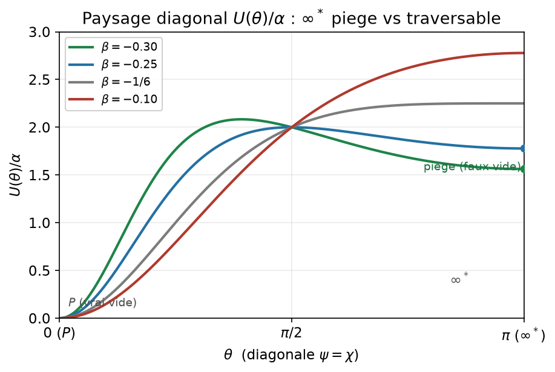
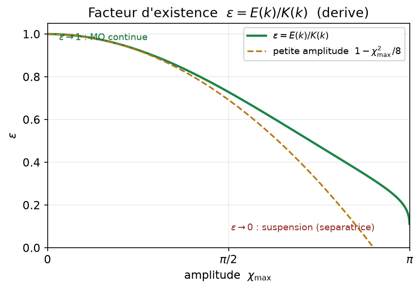
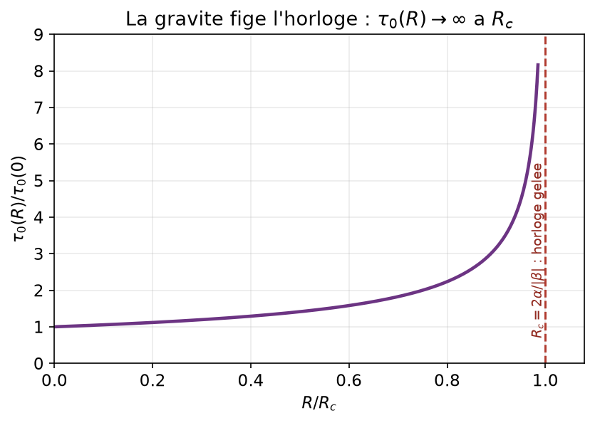

Introduction
Réconcilier mécanique quantique et relativité générale est un problème ouvert depuis un siècle. Côté gravitation, deux exigences pèsent sur toute physique du régime de Planck : faire disparaître les singularités [3–7] et rendre compte de l’expansion accélérée primordiale [8, 9]. Côté quantique, la décohérence et la sélection d’une base privilégiée doivent être expliquées sans environnement externe ad hoc [2, 20]. Les programmes établis (cordes, gravité à boucles, géométrie non commutative, gravité semi-classique hybride) abordent ces fronts par des voies distinctes.
Nous explorons une unique hypothèse géométrique. L’axe d’échelle logarithmique, habituellement non compact, est pris pour un cercle : par projection stéréographique, l’échelle de Planck (pôle \(P\)) et une échelle « unifiée » (pôle \(\infty^*\)) deviennent deux pôles d’une même variété [1]. Il y a deux tels axes — spatial (\(\psi\)) et temporel (\(\chi\)) — d’où l’arène \(\mathcal{M}=M_{3+1}\times S^1_\psi\times S^1_\chi\). L’axe spatial gouverne la face gravitationnelle/cosmologique [1] ; l’axe temporel, la face quantique — le temps de l’hypothèse de discontinuité d’existence quantique (HDEQ) [2].
Une clarification ontologique, d’emblée.
L’HDEQ ne postule pas un temps discret. Le temps reste un paramètre continu ; ce qui est intermittent, c’est l’existence active des systèmes quantiques, en cycles de durée \(\tau_0\) (fraction active \(\varepsilon\)). Le qualificatif « temporel » pour l’axe \(\chi\) désigne le rôle d’horloge qu’il joue (§6), non une signature métrique de genre temps.
Périmètre et honnêteté épistémique.
Ce travail ne prétend pas résoudre l’unification à lui seul. Il propose une direction cohérente et falsifiable : les choix de modélisation sont assumés, les résultats étiquetés selon leur statut, et c’est à la communauté de tester, étendre ou réfuter.
Cadre formel : l’arène et l’action
Postulat 1 (compactification). La variété fondamentale est \(\mathcal{M}=M_{3+1}\times S^1_\psi\times S^1_\chi\), les axes d’échelle étant des cercles via \(\psi=2\arctan[\ln(\lambda/\ell_P)]\) et \(\chi=2\arctan[\ln(\tau/\tau_P)]\). Les pôles \(\pm\pi\) sont identifiés (\(\infty^*\)) ; \(0\) est le point de Planck \(P\).
Action, métrique d’espace de champ (B1) et bande viable
\[\begin{equation} S=\int d^4x\,\sqrt{-g}\Big[\tfrac12 fR-\tfrac12\omega\big((\partial\psi)^2+(\partial\chi)^2\big)-V\Big], \quad f=1+\beta(\cos\psi+\cos\chi),\quad V=\alpha(2-\cos\psi-\cos\chi). \end{equation}\] [preuve] (B1) Au repère d’Einstein, la métrique d’espace de champ \(\mathcal{G}_{ab}\) est définie positive \(\Leftrightarrow f>0\) : une partie cinétique \(\omega/f\) (définie positive) plus une partie non minimale de rang 1 semi-définie positive. La bande viable est l’intervalle ouvert \(\beta\in(-0{,}5;-0{,}15)\) (à \(\beta=-1/2\), \(f\to0\) en \(P\)). [preuve] (F2) \(S^1_\psi,S^1_\chi\) sont des cercles internes (cible \(\sigma\)-modèle euclidienne), non des dimensions d’espace-temps ; \(\chi\) n’est pas une coordonnée de genre temps \(\to\) pas de fantôme, pas de courbe temporelle fermée. L’enroulement \(=\) la charge d’échelle topologique.
Le secteur gravitationnel et cosmologique (« l’infiniment grand »)
[preuve] Aux champs gelés, la gravité d’Einstein émerge ; au vide symétrique \(P\) (\(V=0\)), la constante cosmologique s’annule. Au pôle \(\infty^*\), la source se réduit à une énergie de vide pure, donnant un espace localement de Sitter de taux \(H^2=2\alpha/[3(1-\beta)]\) (un axe) ou \(4\alpha/[3(1-2\beta)]\) (deux axes), avec scalaire de Kretschmann fini \(K=24H^4\).
En cosmologie homogène, le champ canonique \(\varphi=f_s\psi\) voit le potentiel \(V=\alpha[1-\cos(\varphi/f_s)]\) : une inflation naturelle à couplage non minimal verrouillé — \(f=1+\beta\cos\psi\) a la même structure que le potentiel (étudié indépendamment dans [16]). [numérique] L’intégration part de \(\infty^*\) (phase de Sitter) et roule jusqu’à \(P\) (\(\Lambda=0\)), avec sortie gracieuse. Prédictions de roulement lent (repère d’Einstein) :
| \(\beta\) | \(f_s\) (\(M_{\mathrm{Pl}}\)) | \(n_s\) | \(r\) | statut |
|---|---|---|---|---|
| \(0\) | \(7\) | \(0{,}960\) | \(0{,}078\) | \(r\) trop grand |
| \(+0{,}3\) | \(7\) | \(0{,}949\) | \(0{,}128\) | exclu |
| \(-0{,}3\) | \(5\) | \(0{,}958\) | \(0{,}017\) | compatible (bord) |
| \(-0{,}3\) | \(6\) | \(0{,}959\) | \(0{,}027\) | compatible (bord) |
| \(-0{,}3\) | \(7\) | \(0{,}960\) | \(0{,}036\) | au bord BK18 |
Pour le signe naturel \(\beta\ge0\), \(r\gtrsim0{,}08\) est exclu [12, 13]. La fenêtre viable est une bande étroite \(\beta\in(-0{,}5;-0{,}15)\) avec \(f_s\approx5\)–\(6\,M_{\mathrm{Pl}}\) (intervalle ouvert, cf. II.A), donnant \(r\approx0{,}02\)–\(0{,}04\) corrélé à \(n_s\approx0{,}96\). [numérique] Bemol honnête (P1). Sur cette bande \(n_s\approx0{,}958\)–\(0{,}961\), soit \(\sim1\)–\(2\sigma\) sous la valeur centrale de Planck : le cadre vit au bord du contour. Les données CMB fournissent une contrainte sur le couplage de dualité d’échelle \(\beta\) dans ce cadre (la phénoménologie \((n_s,r)\) étant partagée avec [16, 24, 25]), testable par Simons Observatory [27] et LiteBIRD [14] (\(\sigma(r)\sim10^{-3}\)) d’ici 2030.1
[numérique] (A1) Le roulement lent au second ordre avec la métrique d’espace de champ exacte reproduit la Table 1 à mieux que \(0{,}5\%\), et fixe \(\alpha\) par \(A_s=2{,}1\times10^{-9}\) : \(\alpha\approx0{,}5\)–\(1{,}2\times10^{-9}\,M_{\mathrm{Pl}}^4\), soit une échelle d’inflation \(V^{1/4}\sim1{,}1\)–\(1{,}4\times10^{16}\) GeV (GUT). Au \(f_s\approx5\)–\(6\) de l’inflation, cela donne \(\tau_0=2\pi\sqrt{\omega/\alpha}\approx3{,}4\)–\(3{,}8\times10^{-37}\) s (cohérent : l’horloge utilise désormais le même \(f_s\) que l’inflation, ce qui résout le décalage antérieur \(f_s=57\) donnant \(r\approx0{,}14\), exclu). Prédiction stable sur la bande : le running \(dn_s/d\ln k\approx-6{,}5\times10^{-4}\) — compatible avec Planck (\(-0{,}004\pm0{,}007\)). (Reliquat : Mukhanov–Sasaki mode-par-mode, sous-pourcent ; \((n_s,r,\alpha)\) calculés sur la trajectoire représentative à un champ, le traitement complet à deux champs — offset de \(f\) en \(\chi=0\), effets de virage — restant une hypothèse non testée, piste A2.)
Honnêteté sur la nouveauté.
Ce secteur reproduit, sans l’améliorer, l’inflation naturelle non minimale périodique de Ferreira–Notari–Simeon [16], son extension scalaire-tenseur [24], et les analyses \((n_s,r,\text{running})\) face à BICEP/Keck [25]. La nouveauté du présent travail n’est donc pas la phénoménologie inflationnaire, mais la tentative d’unification inter-secteurs (§5).
Le secteur statique : aucun trou noir régulier (clôture)
[preuve][numérique] À un champ [1], le profil radial statique est clos : la branche gelée \(\psi\equiv-\pi\) est exactement Schwarzschild–de Sitter ; la branche roulante développe un horizon singulier (effondrement de \(B=e^{\Phi+\Lambda}\), masse de Misner–Sharp négative, \(R\) divergent). Nous appuyons la clôture sur l’argument robuste plutôt que sur un tableau hors-bande : par Derrick \(+\) topologie, le profil statique (reliant \(\infty^*\) à \(P\)) est un demi-soliton non protégé \(N=\tfrac12\), donc contractible — aucune solution régulière interpolante n’existe, pour tout \(\beta\) de la bande. Le soliton entier \(N=1\) a une masse \(8\sqrt{\omega\alpha}\approx2\)–\(5\times10^{15}\) GeV (échelle GUT ; \(\approx3\times10^{15}\) au centre \(f_s\approx6\), avec \(\alpha\) fixé en A1) — valeur harmonisée avec le \(f_s\) corrigé (P1).
Dégel de l’axe temporel.
[preuve] En rendant \(\chi\) dynamique, \(\chi\equiv0\) reste une solution exacte et reproduit la clôture, mais le couplage de \(\chi\) à \(R\) renormalise la gravité : sur la tranche \(\chi=0\), \(f_{\mathrm{eff}}=(1+\beta)+\beta\cos\psi\), et le seuil de stabilité se déplace (\(\beta_c=-1/4\) pour deux axes). La conclusion de clôture est robuste ; la valeur précise du seuil est dépendante de la réduction (\(-1/3\) mono-axe, \(-1/4\) sur la tranche \(\chi=0\), \(-1/6\) sur la diagonale — voir §5).
Le pôle \(\infty^*\) : une tension structurelle entre clôture et déroulement
[numérique] L’effondrement dynamique (non statique) plafonne-t-il la courbure ? La réponse tient à la nature du pôle \(\infty^*\) — qui n’est pas indépendante de la réduction. C’est le point central, que nous consignons comme le résultat structurel de cette synthèse : une tension ouverte, non un verdict tranché.
Lecture mono-axe / Jordan.
Sur l’unique axe actif (\(\chi\) gelé), pour le potentiel de Jordan \(V\), \(\infty^*\) est un maximum (\(V''(-\pi)=-\alpha<0\)). L’effondrement sphérique homogène avec champ roulant pousse alors \(\psi\) à travers \(\infty^*\) : la courbure n’est pas plafonnée, aucun cœur régulier ne se forme. Dans cette lecture, les deux verdicts — sortie gracieuse en cosmologie, pas de cœur régulier en effondrement — partagent la cause « \(\infty^*\) est un sommet ».
Lecture à deux champs / repère d’Einstein.
Mais la cosmologie qui fixe \((n_s,r)\) est, stricto sensu, un système à deux champs sur la diagonale \(\psi=\chi\). [numérique] Dans le paysage diagonal en repère d’Einstein \(U=V/f^2\), la nature de \(\infty^*\) change de signe à \(\beta=-1/6\) : pour \(\beta>-1/6\) c’est un maximum (roule), mais pour \(\beta<-1/6\) — soit toute la bande viable \(\beta\in(-0{,}5;-0{,}15)\) — \(\infty^*\) est un minimum local piégé (un faux vide) derrière une barrière interne \(\theta_b\). Dans cette lecture, un effondrement poussant le champ vers \(\infty^*\) pourrait l’y retenir (cœur de Sitter) plutôt que de le traverser — ce qui pointerait au contraire vers une courbure plafonnée, soit un cœur régulier possible.

La tension.
Les deux lectures divergent sur la nature même de \(\infty^*\), donc sur la régularisation de l’effondrement. Elles ne sont pas cosmétiques. La clôture statique repose sur \(\infty^*\) piégé (Derrick : le champ ne peut connecter \(\infty^*\) à \(P\), la seule solution statique est le Schwarzschild–de Sitter gelé), tandis que l’image littérale du « déroulement » (le parchemin, le champ s’enroulant à travers \(\infty^*\)) exige \(\infty^*\) traversable. Le même pôle ne peut être les deux, et la bande \(\beta<-1/6\) qui donne la clôture est exactement celle qui obstrue le déroulement dynamique. Nous consignons donc :
la clôture statique (aucun trou noir régulier) est robuste — elle découle de Derrick \(+\) topologie (demi-soliton contractible \(N=\tfrac12\)) et tient à travers les réductions. [preuve]
le verdict de l’effondrement dynamique est dépendant de la réduction et ouvert : traverse-et-non-plafonné dans la lecture mono-axe/\(V\), mais faux vide piégé (donc candidat à une courbure plafonnée, un cœur régulier) dans la lecture à deux champs en repère d’Einstein, sur toute la bande viable. [conjecture][ouvert]
Un raccourci qui échoue.
On pourrait espérer qu’une vraie dynamique multichamp (une « spirale » : le champ s’écartant de la diagonale en tournant) supprime \(r\) ou soutienne le déroulement. [numérique] Une intégration complète à deux champs avec élan latéral injecté montre qu’il n’en est rien : le virage est transitoire (\(\omega/H\approx1{,}6\) au départ) puis amorti par le frottement de Hubble bien avant la fenêtre CMB ; \(r\) reste \(\approx0{,}046\), jamais supprimé. La raison est structurelle — \(P\) est un creux ponctuel, pas une vallée annulaire, rien ne soutient une orbite. Le « déroulement » se lit donc au mieux comme un énoncé topologique/spatial (la charge entière de soliton \(N\)), et le déroulement temporel littéral (une trajectoire enroulée \(N\ge1\) à travers \(\infty^*\)) comme une signature conditionnelle (oscillations log-périodiques) disponible seulement hors de la bande viable — non comme un mécanisme dynamique établi.
La seule ouverture, côté quantique.
S’il existe une régularisation dans la bande viable, le candidat n’est pas le roulement classique mais l’horloge quantique : à la courbure d’effondrement \(R_c=2\alpha/|\beta|\), la masse effective de \(\chi\) s’annule et \(\tau_0\to\infty\) (D4, §6) — le cycle ne se referme plus, ce qui pourrait interdire la traversée classique et retenir le champ en \(\infty^*\). C’est la seule voie par laquelle la boucle d’unification pourrait se fermer. [spéculation]
Le secteur quantique et le pont (« l’infiniment petit »)
Le facteur d’existence dérivé exactement (D1)
[preuve] L’oscillation de \(\chi\) dans \(V\) est un pendule (sine-Gordon). Pour une amplitude \(\chi_{\max}\) (module elliptique \(k=\sin(\chi_{\max}/2)\)), l’identité sur \(\langle\mathrm{sn}^2\rangle\) donne la forme exacte (vérifiée en intégrant \(\chi''=-\sin\chi\) à \(10^{-16}\)) : \[\varepsilon=\langle\cos^2(\chi/2)\rangle=\frac{E(k)}{K(k)},\qquad \tau_0(k)=4\sqrt{\omega/\alpha}\,K(k).\] À petite amplitude \(\varepsilon\to1-\chi_{\max}^2/8\) et \(\tau_0\to2\pi\sqrt{\omega/\alpha}\). En s’approchant de la séparatrice (\(\infty^*\)), \(\varepsilon\to0\) (suspension). \(\varepsilon\) n’est donc plus un paramètre libre : c’est \(E(k)/K(k)\), fixé par l’amplitude.

Réalisation opératorielle (D1) et modulation gravitationnelle (D4)
[conjecture] (réalisée, D1) \(\chi\) est une horloge relationnelle de Page–Wootters [22] : sur \(\mathcal{H}_{\mathrm{horloge}}\otimes\mathcal{H}_{\mathrm{sys}}\) avec une contrainte intemporelle, le système évolue par rapport à \(\chi\) — définissant « temporel » comme un rôle d’horloge, sans signature de genre temps (réponse à F2). Pour \(\hat{H}_{\mathrm{sys}}\) constant, l’évolution moduldee par \(g(\chi)=\cos^2(\chi/2)\) donne sur une période \(\hat U(\tau_0)=\exp(-i\hat{H}_{\mathrm{sys}}\varepsilon\tau_0)\), soit \(\hat{H}_{\mathrm{eff}}=\varepsilon\hat{H}_{\mathrm{sys}}\) — le résultat de Floquet \(\Omega_F=\varepsilon\Omega_R\) de [2], ici vérifié pour \(\hat{H}_{\mathrm{sys}}\) constant (qubit modulé, erreur \(\sim10^{-11}\)) ; le cas non commutant (Floquet complet) est estimé négligeable mais non prouvé. [ouvert] dériver la contrainte intemporelle de l’action de \(\chi\) ; exactitude de la réduction à deux états.
[preuve] (D4) Le couplage de \(\chi\) à \(R\) déplace sa masse effective : \(\tau_0(R)=2\pi\sqrt{\omega/(\alpha+\tfrac12\beta M_{\mathrm{Pl}}^2 R)}\). Deux effets, à ne pas confondre. (A) \(\sqrt{-g_{00}}\approx1+\phi/c^2\) : dilatation gravitationnelle standard (\(\tau_0\) est un scalaire de temps propre), observable mais non nouvelle — c’est la RG. (B) le décalage dynamique \(\delta\tau_0/\tau_0\approx-(\beta/4)(M_{\mathrm{Pl}}^2 R/\alpha)\propto R\) local : il s’annule dans le vide et vaut \(\sim10^{-81}\) dans la matière — inobservable. Mais à \(R_c=2\alpha/|\beta|\) (le seuil d’effondrement de §5), la masse effective de \(\chi\) s’annule : \(\tau_0\to\infty\), l’horloge quantique gèle. Le même \(R_c\) qui déclenche la descente fait diverger le cycle — une réalisation concrète du piégeage en \(\infty^*\) [conjecture]. (\(\tau_0(R)\) est en petite amplitude ; le comportement exact près de \(R_c\) requiert le potentiel anharmonique complet.)

Sécurité Lorentz du temps quantique
[preuve] \(\tau_0\sim10^{-37}\) s correspond à \(\hbar/\tau_0\approx10^{13}\) GeV ; il faut vérifier qu’aucune violation de Lorentz n’en résulte (temps de vol des photons, LHAASO). Une existence intermittente ne viole Lorentz que par une modification de la relation de dispersion dépendant de l’impulsion. Or (i) l’évolution propre de \(\hat H\) est exactement linéaire en phase à tous ordres en \(\tau_0\) (Proposition 1 de l’HDEQ) ; (ii) l’action de Maxwell est invariante de Weyl en \(D=4\), donc le photon est aveugle au facteur conforme \(f(\chi)\). La dispersion du photon libre reste exactement \(\omega=|p|c\) : aucun signal LHAASO. La seule correction (anomalie de trace QED) est logarithmique, non en puissance de \(E/E_{\mathrm{QG}}\) — aucun terme LIV linéaire. [à vérifier]
Test inter-secteurs (E1) : le CMB est le seul juge
[numérique] Sur l’\(\alpha\) fixé en A1, \(\tau_0\in[2{,}5;5{,}3]\times10^{-37}\) s. Point décisif : l’unification retire la liberté sur \(\varepsilon\). Le pont lie \(\varepsilon\) au déplacement actuel du champ, lequel égale l’énergie noire ; numériquement \(\psi_{\mathrm{aujourd'hui}}\sim10^{-56}\) rad, donc \(\varepsilon=1-3\times10^{-112}\). Conséquences : l’effet Yb\(^+\) \(\Delta\Gamma/\Gamma=1-\varepsilon^2\approx10^{-112}\), la décohérence intrinsèque sous le plancher, la résonance à \(\Delta E\approx1{,}2\times10^{13}\) GeV — tout le secteur horloge de l’HDEQ est inobservable. Bemol (ouvert). Le cadre pose \(\Lambda=0\) au vide \(P\), alors que l’énergie noire observée est non nulle ; l’identité « résidu actuel \(=\) énergie noire » qui fixe \(\varepsilon=1-10^{-112}\) n’est pas dérivée, et la réconciliation avec le \(\Lambda\) observé reste ouverte (une lecture en quintessence résiduelle, \(\varepsilon\) légèrement sous \(1\), porterait \(\Lambda>0\) au prix d’un ajustement fin). La conclusion « horloges non discriminantes » tient dans les deux lectures. [ouvert]
Verdict E1 (rigoureux).
Le cadre passe le test de cohérence, mais la confrontation n’est pas symétrique : le côté horloge est satisfait trivialement (\(\varepsilon\approx1\)). Toute la charge de falsifiabilité repose donc sur le CMB (\(n_s\approx0{,}96\), \(r\approx0{,}02\)–\(0{,}04\), running \(\approx-6{,}5\times10^{-4}\)). Le « même \((\alpha,\omega)\) pour le CMB et les horloges » est rempli automatiquement côté horloge — à ne pas présenter comme un test discriminant.
Vue d’ensemble et critère de falsifiabilité
La vision est un ansatz, non un résultat : une arène unique dont les lois connues sont ses deux régimes limites. (Infiniment grand :) champs lents \(\to\) relativité générale, \(\Lambda=0\) au vide, inflation. (Infiniment petit :) dynamique du cercle \(\chi\to\) existence intermittente, décohérence (HDEQ). La charnière est l’axe \(\chi\), qui se couple à la courbure et module le temps quantique via la gravité. Les deux faces sont jointes par un pont désormais partiellement prouvé (\(\varepsilon\) dérivé, modulation incluse ; la construction opératorielle complète reste ouverte).
Le critère de vérité est numérique, mais asymétrique : le CMB \((n_s,r,\text{running})\) est le juge ; les horloges atomiques fournissent une contrainte de cohérence automatiquement satisfaite (\(\varepsilon\approx1\)), non un test discriminant. La signature proposée pour ce cadre — qu’aucun observable cosmologique isolé ne possède, \((n_s,r,\text{running})\) étant partagés avec [16, 24, 25] — est la corrélation inter-secteurs \(\beta(\mathrm{CMB})=\beta(\text{cl\^oture})\) : le même couplage devrait ajuster l’inflation et satisfaire les seuils de clôture des trous noirs. Cette corrélation est une conjecture conditionnelle à la réduction (§5), non un théorème : avec trois seuils candidats (\(-1/3,-1/4,-1/6\)), « \(\beta(\text{cl\^oture})\) » n’est pas encore un nombre unique, de sorte que trancher la réduction (piste A2) est le préalable pour en faire un véritable discriminant. C’est là que vivrait la falsifiabilité, testable via LiteBIRD / Simons Observatory.
Statut épistémique et limitations
| Contenu | Statut |
|---|---|
| Action finie ; limite RG ; inflation naturelle à couplage verrouillé, \((n_s,r)\) et une contrainte sur \(\beta\) ; clôture statique robuste (Derrick \(+\) topologie) ; \(\mathcal{G}_{ab}\) définie positive (B1) ; santé \(\sigma\)-modèle, pas de fantôme/CTC (F2) ; sécurité Lorentz du photon ; \(\varepsilon=E(k)/K(k)\) dérivé ; \(\alpha\) fixé par \(A_s\), running \(\approx-6{,}5\times10^{-4}\) (A1) ; \(f_s\approx5\)–\(6\) et \(\tau_0\) cohérents. | [preuve][numérique] |
| \(\hat{H}_{\mathrm{eff}}=\varepsilon\hat{H}_{\mathrm{sys}}\) via horloge de Page–Wootters, restreint à \(\hat{H}_{\mathrm{sys}}\) constant (D1) ; \(\tau_0(R)\) dérivé, \(\tau_0\to\infty\) à \(R_c\) (D4) ; E1 : secteur horloge non discriminant, CMB seul juge. | [conjecture] (réalisée) |
| Tension ouverte centrale : la nature de \(\infty^*\) (traversable vs piégé) gouverne le verdict dynamique d’effondrement et la signature inter-secteurs ; réduction non tranchée (piste A2). Dériver la contrainte de Page–Wootters de l’action de \(\chi\) ; réconcilier \(\Lambda=0\) vs énergie noire observée ; effondrement inhomogène ; piégeage quantique en \(\infty^*\) (régularisation) ; règle de Born ; sélection d’une branche ; Mukhanov–Sasaki mode-par-mode. | [ouvert][spéculation] |
La distinction des statuts n’est pas un ornement mais une part constitutive de la méthode : elle garantit que ce travail peut être réutilisé sans qu’aucun énoncé dépasse ce qui est réellement établi.
Conclusion
Un unique champ de dualité d’échelle, sur une arène à axes compactifiés (cercles internes, non des dimensions d’espace-temps), engendre une cosmologie inflationnaire prédictive et falsifiable, règle la question du trou noir régulier statique par une cause structurelle (Derrick \(+\) topologie), et offre un pont vers le temps quantique de l’HDEQ désormais partiellement prouvé : le facteur d’existence \(\varepsilon=E(k)/K(k)\) est dérivé, le mécanisme actif/inactif et la propagation libre sûre pour Lorentz établis. La régularisation dynamique, en revanche, n’est pas tranchée : elle tient à la nature du pôle \(\infty^*\), traversable dans une réduction et faux vide piégé dans une autre — une tension que nous consignons comme le problème ouvert central, le gel de l’horloge à \(R_c\) étant la seule voie candidate pour fermer la boucle. Ce n’est pas une clôture de l’unification ; c’est une direction dont la nature même est d’être réfutable. C’est le prix — l’étiquetage honnête de chaque énoncé — auquel une intuition individuelle peut devenir une direction collective.
Remerciements.
L’auteur remercie les outils de calcul formel et numérique (SymPy, SciPy), qui ont permis la vérification systématique à chaque étape, et la communauté gr-qc/hep-th/quant-ph pour les standards de rigueur et de falsifiabilité qui ont guidé ce travail. La formalisation a été conduite en dialogue avec des systèmes d’assistance analytique, sous la direction de l’auteur, à qui revient l’entière responsabilité du contenu scientifique.
Reproductibilité
Les résultats numériques et les vérifications symboliques sont reproduits par deux scripts autonomes (NumPy/SymPy/SciPy/Matplotlib), aux sections codées pour être propres à ce document (aucune collision avec d’autres jeux de scripts) :
facteur d’existence \(\varepsilon=E(k)/K(k)\) vérifié contre le pendule \(\langle\cos^2(\chi/2)\rangle\) ; petite amplitude \(\varepsilon\to1-\chi_{\max}^2/8\) ; \(\tau_0(k)=4\sqrt{\omega/\alpha}\,K(k)\).
nature de \(\infty^*\) : seuil diagonal \(\beta=-1/6\) (piégé/roule) et masse transverse isocourbure (changement de signe à \(\beta=-1/4\)).
inflation bande viable \(f_s=5\)–\(6\) : \((n_s,r)\) diagonale vs mono (accord) ; \(\alpha\), \(V^{1/4}\), \(\tau_0\approx3{,}5\times10^{-37}\) s, masse du soliton (P1).
modulation gravitationnelle \(\tau_0(R)\) ; \(R_c=2\alpha/|\beta|\) ; \(\delta\tau_0/\tau_0=-(\beta/4)M_{\mathrm{Pl}}^2R/\alpha\).
test de la spirale (intégration à deux champs) : le virage est amorti, \(r\) jamais supprimé.
Fichiers : U3_SYNTH_reproductible.py (calculs) et
Synthese_figures.py (Fig. 2, 1, 3).
Convention : \(M_{\mathrm{Pl}}=1\) ; \(\alpha\) s’annule dans les rapports \((n_s,r)\). Le préfixe
U3_SYNTH_ et les codes [S\(\cdot\)] sont spécifiques à ce
document.
99 H. Bakkaoui, Champ de dualité d’échelle en gravité (cadre, corrections et résultats), Zenodo (2026). H. Bakkaoui, Discontinuité d’existence quantique (HDEQ), Zenodo (2026). J. M. Bardeen, Proc. GR5 (Tbilisi, 1968), p. 174. S. A. Hayward, Phys. Rev. Lett. 96, 031103 (2006). I. Dymnikova, Gen. Relativ. Gravit. 24, 235 (1992). R. Penrose, Phys. Rev. Lett. 14, 57 (1965). S. W. Hawking & G. F. R. Ellis, The Large Scale Structure of Space-Time (CUP, 1973). A. H. Guth, Phys. Rev. D 23, 347 (1981). K. Freese, J. A. Frieman & A. V. Olinto, Phys. Rev. Lett. 65, 3233 (1990). J. D. Bekenstein, Phys. Rev. D 51, R6608 (1995). F. L. Bezrukov & M. Shaposhnikov, Phys. Lett. B 659, 703 (2008). Planck Collaboration, Astron. Astrophys. 641, A10 (2020). BICEP/Keck Collaboration, Phys. Rev. Lett. 127, 151301 (2021). LiteBIRD Collaboration, Prog. Theor. Exp. Phys. 2023, 042F01 (2023). K. N. Abazajian et al. (CMB-S4), arXiv:1610.02743 (2016) — projet arrêté, juillet 2025. R. Z. Ferreira, A. Notari & G. Simeon, JCAP 11 (2018) 021. V. P. Frolov, M. A. Markov & V. F. Mukhanov, Phys. Rev. D 41, 383 (1990). C. Rovelli & F. Vidotto, Int. J. Mod. Phys. D 23, 1442026 (2014). A. Connes & C. Rovelli, Class. Quantum Grav. 11, 2899 (1994). W. H. Zurek, Rev. Mod. Phys. 75, 715 (2003). D. I. Kaiser, Phys. Rev. D 81, 084044 (2010). D. N. Page & W. K. Wootters, Phys. Rev. D 27, 2885 (1983). I. Bars, Class. Quantum Grav. 18, 3113 (2001). [à vérifier] G. Simeon, arXiv:2002.07625 (2020). I. D. Bostan, arXiv:2209.02434 (2022). C. Marletto & V. Vedral, Phys. Rev. D 95, 043510 (2017). Simons Observatory Collaboration (P. Ade et al.), JCAP 02 (2019) 056, arXiv:1808.07445.
Le projet CMB-S4 (DOE–NSF), longtemps l’instrument de référence pour ce test, a été arrêté : le 9 juillet 2025, le DOE et la NSF ont déclaré ne plus pouvoir le soutenir (arrêt ordonné), il n’est donc plus financé [15]. La falsifiabilité demeure, portée par Simons Observatory (Chili, en service), LiteBIRD (\(\sim\)2032) et BICEP/Keck (en cours). [à vérifier]↩︎